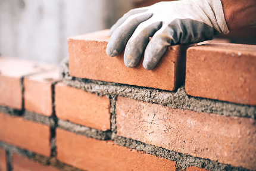

Про цеглу...
З чого будувати будинок? Це питання постає на самому ранньому етапі планування майбутнього будівництва. Такий матеріал як цегла завжди розглядається в якості одного з варіантів для будівництва.
Обпалена цегла – один з найдавніших будівельних матеріалів. В Єгипті археологи виявили споруди з цегли, вік яких датується 2-3 століттям до н. е. Будували будинки з цегли і в Стародавній Греції, і в Стародавньому Римі.
На вітчизняних теренах перші цегляні споруди з'явилися в 15 столітті. Єдиний стандарт для цеглини був прийнятий в 1927 році. Згідно нього «зразковим» вважається цегла розміри 250х120х65 мм. Він називається одинарним. Також виготовляють полуторні і подвійні цеглини.
Цегляні будинки, складені в 2,5 цегли, займають почесну пальму першості за термінами експлуатації. Будівельні нормативи відводять їм термін життя до 150 років, що є значно довшим у порівнянні з наприклад шлакобетонними плитами, термін яких лише 100 років.
Будівлі, товщина стін яких менше 2,5 цегли, згідно з нормативними термінами експлуатації, можуть з успіхом експлуатуватися 120 років.
Основними плюсами будівництва керамічноюцеглою є:
- Цегла являється екологічно чистим продуктом.
- Простота її кладки.
- Довгий термін експлуатації.
- Непогані показники теплопровідності (особливо пустотілої цегли).